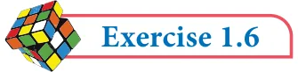

- 1.(i) If n(A) \(= 25\), n(B) \(= 40\), n(A \(\cup\) B) \(= 50\) and n(B ' ) \(= 25\) , find n(A \(\cap\) B) and n(U).
- (ii)If n(A) \(= 300\), n(A \(\cup\) B) \(= 500\), n(A \(\cap\) B) \(= 50\) and n(B ' ) \(= 350\), find n(B) and n(U).
- 2.If \(U =\) {x : \(x \in N\), \(x \le 10}\), \(A = {2,3,4,8,10}\) and \(B = {1,2,5,8,10}\), then verify that
n(A \(\cup\) B) = n(A) + n(B) - n(A \(\cap\) B)
- 3.Verify n(A \(\cup B \cup\) C) = n(A) + n(B) \(+ n\) C( ) - n(A \(\cap\) B) - n(B \(\cap\) C) - n(A \(\cap\) C)
\(+n(A \cap B \cap\) C) for the following sets.
- (i)\(A =\) {a,c e, , f,h}, \(B =\) {c,d,e, f} and \(C =\) {a,b,c, f}
- (ii)\(A = {1 3\), ,5}, \(B = {2,3,5,6}\) and \(C = {1 5\), ,6,7}
- 4.In a class, all students take part in either music or drama or both. 25 students take part
in music, 30 students take part in drama and 8 students take part in both music and drama. Find
- (i)The number of students who take part in only music.
- (ii)The number of students who take part in only drama.
- (iii)The total number of students in the class.
- 5.In a party of 45 people, each one likes tea or coffee or both. 35 people like tea and
20 people like coffee. Find the number of people who
- (i)like both tea and coffee. (ii) do not like tea. (iii) do not like coffee.
- 6.In an examination 50% of the students passed in Mathematics and 70% of students
passed in Science while 10% students failed in both subjects. 300 students passed in both the subjects. Find the total number of students who appeared in the examination, if they took examination in only two subjects.
- 7.A and B are two sets such that n(A - B) \(= 32 + x\), n(B - A) \(= 5x\) and n(A \(\cap\) B) \(= x\). Illustrate
the information by means of a Venn diagram. Given that n(A) = n(B), calculate the value of x.
- 8.Out of 500 car owners investigated, 400 owned car A and 200 owned car B, 50 owned
both A and B cars. Is this data correct?
- 9.In a colony, 275 families buy Tamil newspaper, 150 families buy English newspaper,
45 families buy Hindi newspaper, 125 families buy Tamil and English newspapers, 17 families buy English and Hindi newspapers, 5 families buy Tamil and Hindi newspapers and 3 families buy all the three newspapers. If each family buy atleast one of these newspapers then find
- (i)Number of families buy only one newspaper
- (ii)Number of families buy atleast two newspapers
- (iii)Total number of families in the colony.
- 10.A survey of 1000 farmers found that 600 grew paddy, 350 grew ragi, 280 grew corn, 120
grew paddy and ragi, 100 grew ragi and corn, 80 grew paddy and corn. If each farmer grew atleast any one of the above three, then find the number of farmers who grew all the three.

- 11.In the adjacent diagram, if n(U) \(= 125\) , y is two times of x
and z is 10 more than x, then find the value of x ,y and z.
- 12.Each student in a class of 35 plays atleast one
game among chess, carrom and table tennis. 22 play chess, 21 play carrom, 15 play table tennis, 10 play chess and table tennis, 8 play carrom and table tennis and 6 play all the three games. Find the number of students who play (i) chess and carrom but not table tennis (ii) only chess (iii) only carrom (Hint: Use Venn diagram)
- 13.In a class of 50 students, each one come to school by bus or by bicycle or on foot. 25 by
bus, 20 by bicycle, 30 on foot and 10 students by all the three. Now how many students come to school exactly by two modes of transport?


Multiple Choice Questions
- 1.Which of the following is correct?
\((1) {7} \in {1,2,3,4,5,6,7,8,9,10} (2) 7 \in {1,2,3,4,5,6,7,8,9,10} (3) 7 \notin {1,2,3,4,5,6,7,8,9,10} (4) {7} M {1,2,3,4,5,6,7,8,9,10}\)
- 2.The set \(P =\) {x | \(x \in Z\) , \(- 1< x < 1}\) is a
(1) Singleton set (2) Power set (3) Null set (4) Subset
- 3.If \(U ={x\) | \(x \in N\), \(x < 10}\) and \(A =\) {x | \(x \in N\), \(2 \le x < 6}\) then (A ' ) ' is
(1) {1, 6, 7, 8, 9} (2) {1, 2, 3, 4} (3) {2, 3, 4, 5} (4) { }
- 4.If \(B \subseteq A\) then n(A \(\cap\) B) is
(1) n(A - B) (2) n(B) (3) n(B - A) (4) n(A)
- 5.If \(A =\) {x, y, z} then the number of non- empty subsets of A is
(1) 8 (2) 5 (3) 6 (4) 7